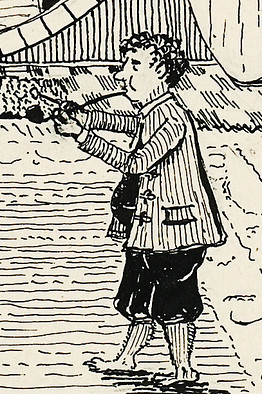
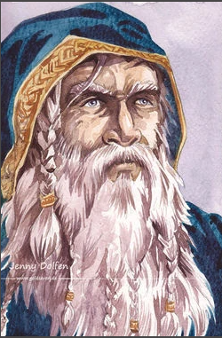
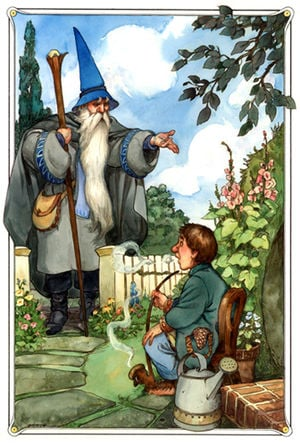
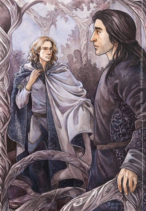
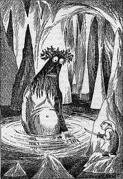

Bilbo Baggins:
Bilbo Baggins, the unassuming hobbit protagonist, begins the tale as a creature of habit, living a quiet life in the cozy confines of the Shire. His world is turned upside down when the wizard Gandalf and a band of dwarves, led by Thorin Oakenshield, arrive at his doorstep. Bilbo's journey is one of self-discovery, transforming him from a reluctant adventurer to a stalwart hero. As he navigates through the challenges of Middle-earth, Bilbo's courage and resilience emerge, proving that even the most unlikely individuals can become the heroes of their own stories.
Thorin Oakenshield:
Thorin Oakenshield, the charismatic and determined dwarf leader, carries the weight of a lost kingdom on his shoulders. He is driven by a deep desire to reclaim the Lonely Mountain and its treasure from the clutches of the fearsome dragon, Smaug. Thorin's unwavering determination often verges on stubbornness, yet his leadership and courage inspire his comrades. His character arc is one of redemption and sacrifice, showcasing the complexities of leadership and the toll it takes on those who bear the responsibility.
Gandalf the Grey:
Gandalf, the wise and enigmatic wizard, plays a pivotal role in shaping the destiny of Middle-earth. With his keen foresight, magical abilities, and deep understanding of the world's machinations, Gandalf serves as a guiding force for the fellowship. He is the catalyst for Bilbo's journey and a crucial ally in the quest to reclaim the Lonely Mountain. Gandalf's character embodies wisdom, mentorship, and a sense of duty to preserve the balance between good and evil.
Smaug:
Smaug, the fearsome dragon, is both a symbol of greed and an embodiment of the perils that lurk in Middle-earth. His conquest of the Lonely Mountain and hoarding of treasure sets the stage for the dwarves' quest. Smaug's cunning and power make him a formidable adversary, and his presence looms large over the narrative, adding an element of suspense and danger to the characters' journey..jpg)
Elrond:
Elrond, the wise and ancient elf lord, resides in the elven refuge of Rivendell. As a guardian of Middle-earth's history and lore, Elrond provides invaluable guidance to the fellowship. His character reflects the enduring wisdom of the elves and their role as stewards of ancient knowledge. Elrond's presence contributes to the richness of the world-building, connecting the narrative to the broader tapestry of Middle-earth's history.
Gollum:
Gollum, formerly known as Sméagol, is a tragic figure corrupted by the power of the One Ring. His character serves as a cautionary tale about the corrupting influence of the ring and the toll it takes on its bearer. Gollum's presence adds a layer of complexity to the story, highlighting the struggle between good and evil within the hearts of individuals. His interactions with Bilbo and later Frodo in "The Lord of the Rings" further underscore the enduring impact of the ring on those who possess it.
These characters, each with their unique traits and arcs, contribute to the richness of "The Hobbit," creating a tapestry of personalities that navigate the challenges and wonders of Middle-earth.